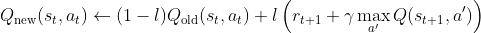
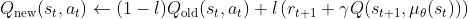

, reward for taking at , discount factor
, reward for taking at , discount factor In discrete setting, can be solved by dynamic programming.
Given state , action , learning rate , reward for taking at , discount factor

In discrete space, is computable as we can enumerate all possible actions. In continuious action space, this is not possible. Thus, we must replace this exhaustive max with a learned “actor” that takes actions, with the Q function taking the role of “critic”.
In DDPG, the actor learns a simple determinstic mapping from state to action , with noise added for exploration during data collection, i.e.
Thus, for a given batch of data, the critic can be optimized via a
modified  update, i.e.
update, i.e.

and then the actor optimized to maximize the value via